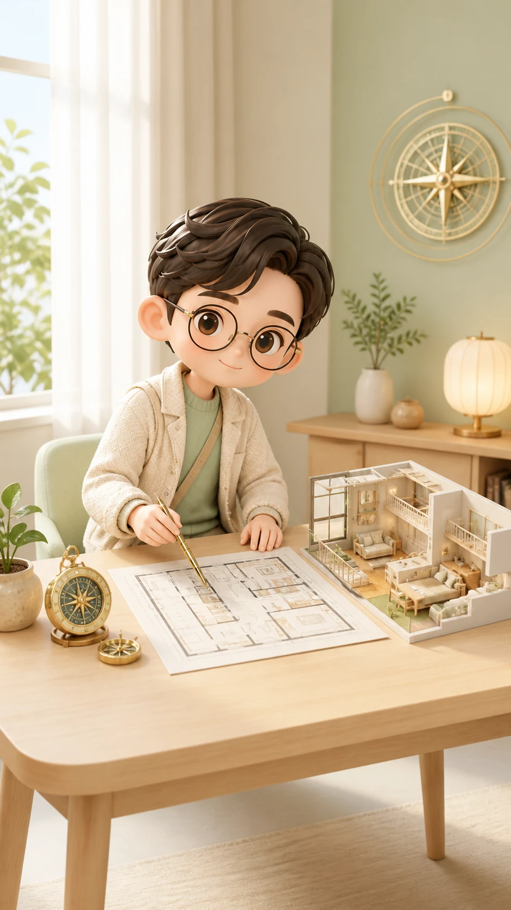
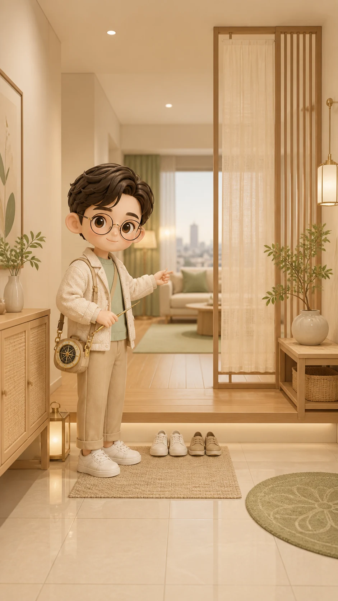
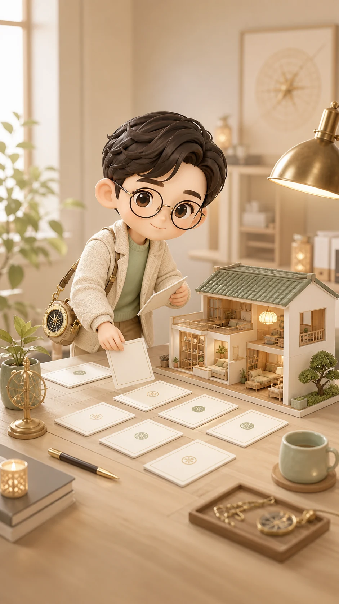

지금 사는 집, 나랑 잘 맞을까?
이 집은 지금 내 리듬과 맞는지 먼저 봅니다
명당인지 흉지인지 딱 잘라 말하기보다, 이 집이 내 잠, 일, 돈, 관계를 살려주는 쪽인지 무료 방향부터 확인합니다.
풍수지리
개인 명리
생활 리듬

방금 입력한 집 정보가 이 브라우저에 남아 있지 않습니다. 입력으로 돌아가기
무료로 먼저 보이는 방향
결론은 숨기지 않고, 범위는 가볍게
전체 풀이의 맛보기라서 한 줄 방향과 강한 신호만 먼저 보여줍니다.
집 핏 예비 판정
입력값을 기준으로 계속 살 각, 손볼 각, 비교 각을 나눕니다
집의 좋고 나쁨보다 내가 이 집에서 덜 흔들리고 잘 회복되는지를 먼저 봅니다.
입력 요약 대기
02 단계에서 입력한 값이 있으면 이곳에 집 형태, 목적, 고민 포인트가 정리됩니다.
강한 신호 4개
지금 먼저 체크할 포인트
현관, 침실, 책상, 창밖 흐름만 봐도 집이 나를 살리는지 피곤하게 하는지 윤곽이 잡힙니다.

결제 후 열리는 전체 범위
9,900원 리포트에서는 10개 흐름을 이어서 봅니다
무료 방향에서 멈추지 않고, 사주와 집의 오행 핏, 공간별 손질, 7일 액션까지 연결합니다.
상품
지금 사는 집, 나랑 잘 맞을까?
제공 범위
10개 대분류, 공간별 처방, 현실 액션
결제 금액
9,900원

로그인 전
로그인 후 방금 결과로 돌아옵니다.
결제 전
무료 방향은 유지하고 전체 리포트만 잠겨 있습니다.
진행 중
중복 결제를 막고 이어서 복구합니다.
취소 또는 실패
무료 결과를 잃지 않고 다시 시도합니다.
전체 리포트 목차
이런 것까지 봅니다
목차는 사용자가 지정한 대분류와 중분류를 그대로 이어받았습니다.
지금 할 수 있는 것
무료 방향만으로도 오늘 체크할 것
전체 리포트 전에도, 아침과 저녁의 체감 차이는 바로 확인할 수 있습니다.
아침 1분
현관에서 거실까지 시선이 어디로 바로 꽂히는지 봅니다.
저녁 1분
침대에 누웠을 때 문, 창, 소음 중 무엇이 제일 먼저 신경 쓰이는지 봅니다.
주말 10분
책상과 침대의 등 뒤를 먼저 정리하고, 못 옮기면 조명과 수납으로 보완합니다.